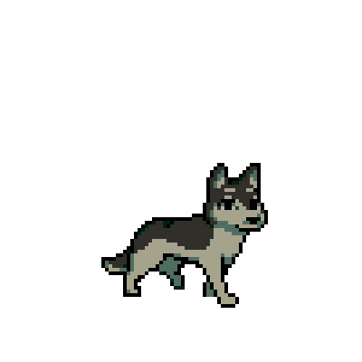
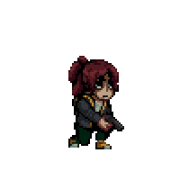

Antes del Enigma
En The Artisan's Brew, creemos que el café es más que una bebida; es una experiencia. Desde 2024, nos dedicamos a seleccionar los mejores granos de origen único y a tostarlos artesanalmente para resaltar sus sabores más exquisitos.



En The Artisan's Brew, creemos que el café es más que una bebida; es una experiencia. Desde 2024, nos dedicamos a seleccionar los mejores granos de origen único y a tostarlos artesanalmente para resaltar sus sabores más exquisitos.

Intenso y aromático, la base de todo.
Cremoso y suave, con leche vaporizada a la perfección.
Un método que revela las notas más sutiles del grano.
Calle Ficticia 123, Ciudad Creativa
Lunes a Sábado: 8:00 AM - 8:00 PM